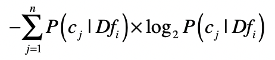
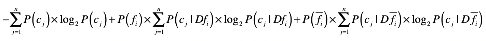
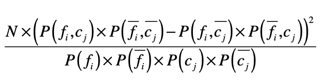

- 01 二进制：不了解计算机的源头，你学什么编程.md
- 02 余数：原来取余操作本身就是个哈希函数.md
- 03 迭代法：不用编程语言的自带函数，你会如何计算平方根？.md
- 04 数学归纳法：如何用数学归纳提升代码的运行效率？.md
- 05 递归（上）：泛化数学归纳，如何将复杂问题简单化？.md
- 06 递归（下）：分而治之，从归并排序到MapReduce.md
- 07 排列：如何让计算机学会“田忌赛马”？.md
- 08 组合：如何让计算机安排世界杯的赛程？.md
- 09 动态规划（上）：如何实现基于编辑距离的查询推荐？.md
- 10 动态规划（下）：如何求得状态转移方程并进行编程实现？.md
- 11 树的深度优先搜索（上）：如何才能高效率地查字典？.md
- 12 树的深度优先搜索（下）：如何才能高效率地查字典？.md
- 13 树的广度优先搜索（上）：人际关系的六度理论是真的吗？.md
- 14 树的广度优先搜索（下）：为什么双向广度优先搜索的效率更高？.md
- 15 从树到图：如何让计算机学会看地图？.md
- 16 时间和空间复杂度（上）：优化性能是否只是“纸上谈兵”？.md
- 17 时间和空间复杂度（下）：如何使用六个法则进行复杂度分析？.md
- 18 总结课：数据结构、编程语句和基础算法体现了哪些数学思想？.md
- 19 概率和统计：编程为什么需要概率和统计？.md
- 20 概率基础（上）：一篇文章帮你理解随机变量、概率分布和期望值.md
- 21 概率基础（下）：联合概率、条件概率和贝叶斯法则，这些概率公式究竟能做什么？.md
- 22 朴素贝叶斯：如何让计算机学会自动分类？.md
- 23 文本分类：如何区分特定类型的新闻？.md
- 24 语言模型：如何使用链式法则和马尔科夫假设简化概率模型？.md
- 25 马尔科夫模型：从PageRank到语音识别，背后是什么模型在支撑？.md
- 26 信息熵：如何通过几个问题，测出你对应的武侠人物？.md
- 27 决策树：信息增益、增益比率和基尼指数的运用.md
- 28 熵、信息增益和卡方：如何寻找关键特征？.md
- 29 归一化和标准化：各种特征如何综合才是最合理的？.md
- 30 统计意义（上）：如何通过显著性检验，判断你的A_B测试结果是不是巧合？.md
- 31 统计意义（下）：如何通过显著性检验，判断你的A_B测试结果是不是巧合？.md
- 32 概率统计篇答疑和总结：为什么会有欠拟合和过拟合？.md
- 33 线性代数：线性代数到底都讲了些什么？.md
- 34 向量空间模型：如何让计算机理解现实事物之间的关系？.md
- 35 文本检索：如何让计算机处理自然语言？.md
- 36 文本聚类：如何过滤冗余的新闻？.md
- 37 矩阵（上）：如何使用矩阵操作进行PageRank计算？.md
- 38 矩阵（下）：如何使用矩阵操作进行协同过滤推荐？.md
- 39 线性回归（上）：如何使用高斯消元求解线性方程组？.md
- 40 线性回归（中）：如何使用最小二乘法进行直线拟合？.md
- 41 线性回归（下）：如何使用最小二乘法进行效果验证？.md
- 42 PCA主成分分析（上）：如何利用协方差矩阵来降维？.md
- 43 PCA主成分分析（下）：为什么要计算协方差矩阵的特征值和特征向量？.md
- 44 奇异值分解：如何挖掘潜在的语义关系？.md
- 45 线性代数篇答疑和总结：矩阵乘法的几何意义是什么？.md
- 46 缓存系统：如何通过哈希表和队列实现高效访问？.md
- 47 搜索引擎（上）：如何通过倒排索引和向量空间模型，打造一个简单的搜索引擎？.md
- 48 搜索引擎（下）：如何通过查询的分类，让电商平台的搜索结果更相关？.md
- 49 推荐系统（上）：如何实现基于相似度的协同过滤？.md
- 50 推荐系统（下）：如何通过SVD分析用户和物品的矩阵？.md
- 51 综合应用篇答疑和总结：如何进行个性化用户画像的设计？.md
- 导读：程序员应该怎么学数学？.md
- 开篇词 作为程序员，为什么你应该学好数学？.md
- 数学专栏课外加餐（一） 我们为什么需要反码和补码？.md
- 数学专栏课外加餐（三）：程序员需要读哪些数学书？.md
- 数学专栏课外加餐（二） 位操作的三个应用实例.md
- 结束语 从数学到编程，本身就是一个很长的链条.md
28 熵、信息增益和卡方：如何寻找关键特征？
你好，我是黄申。今天我们来说说特征选择。
我们已经讨论过信息熵和信息增益在决策树算法中的重要作用。其实，它们还可以运用在机器学习的其他领域，比如特征选择。你可能对“特征选择”这个名词不太熟悉，没有关系，我先花点时间，给你介绍一下什么是特征选择，以及机器学习为什么需要这个步骤。
什么是特征选择？
在编程领域中，机器学习已经有了十分广泛的应用，它主要包括监督式学习（Supervised Learning）和非监督式的学习（Unsupervised Learning）。监督式学习，是指通过训练资料学习并建立一个模型，并依此模型推测新的实例，主要包括分类（Classification）和回归（Regression）。
无论是在监督学习还是非监督学习中，我们都可以使用特征选择。不过，我今天要聊的特征选择，会聚焦在监督式学习中的特征处理方法。因此，为了说清楚特征选择是什么，以及为什么要进行这个步骤，我们先来看看监督式机器学习的主要步骤。
机器学习的步骤主要包括数据的准备、特征工程、模型拟合、离线和在线测试。测试过程也许会产生新的数据，用于进一步提升模型。在这些处理中，特征工程是非常重要的一步。
“特征”（Feature），是机器学习非常常用的术语，它其实就是可用于模型拟合的各种数据。前面讲朴素贝叶斯分类时，我解释了如何把现实世界中水果的各类特征转化为计算机所能理解的数据，这个过程其实就是最初级的特征工程。当然，特征工程远不止原始特征到计算机数据的转化，还包括特征选择、缺失值的填补和异常值的去除等等。这其中非常重要的一步就是特征选择。
越来越多的数据类型和维度的出现，会加大机器学习的难度，并影响最终的准确度。针对这种情形，特征选择尝试发掘和预定义任务相关的特征，同时过滤不必要的噪音特征。它主要包括特征子集的产生、搜索和评估。我们可以使用穷举法来找到最优的结果，但是如果特征有\(N\)个，那么复杂度会达到\(O(2^{N})\)。所以穷举法并不适合特征数量庞大的问题，比如我们之前讲过的文本分类。
因此，在这个领域诞生了一类基于分类标签的选择方法，它们通过信息论的一些统计度量，看特征和类标签的关联程度有多大。这里我还是使用文本分类的案例，来展示如何基于信息论，来进行特征选择。
利用信息熵进行特征选择
我们之前讲过如何为文本数据提取特征。对于一篇自然语言的文章，我们主要使用词包（Bag of Words）模型和分词，把完整的文章切分成多个单词或词组，而它们就表示了文章的关键属性，也就是用于机器学习的特征。
你会发现有些文本预处理的步骤已经在做特征选择的事情了，比如“停用词”。它会直接过滤一些不影响或基本不影响文章语义的词，这就是在减少噪音特征。不过，我之前也提到了，停用词的使用过于简单粗暴，可能会产生适得其反的效果。例如在进行用户观点分类时，“good”和“bad”这样的停用词反而成为了关键。不仅不能过滤，反而要加大它们的权重。
那么，我们怎么能知道哪些特征是更重要的呢？对于分类问题，我们更关心的是如何正确地把一篇文章划分到正确的分类中。一个好的特征选择，应该可以把那些对分类有价值的信息提取出来，而过滤掉那些对分类没有什么价值的信息。既然如此，我们能不能充分利用分类标签来进行挑选呢？答案是肯定的。前两节，我描述了信息熵和信息增益的工作原理。这里，我就可以使用它们来进行特征选择。
首先，我们来看这个问题，什么是对分类有价值的特征？
如果一个特征，经常只在某个或少数几个分类中出现，而很少在其他分类中出现，那么说明这个特征具有较强的区分力，它的出现很可能预示着整个数据属于某个分类的概率很高或很低。
这个时候，对于一个特征，我们可以看看包含这个特征的数据，是不是只属于少数几个类。举个例子，出现“电影”这个词的文章，经常出现在“娱乐”这个分类中，而很少出现在“军事”“政治”等其他分类中。
是否属于少数几个类这一点，可以使用信息熵来衡量。我用\(Df\_{i}\)来表示所有出现特征\(f\_{i}\)的数据集合，这个集合一共包含了\(n\)个分类\(C\)，而\(c\_{j}\)表示这\(n\)个分类中的第\(j\)个。然后我们就可以根据\(Df\_{i}\)中分类\(C\)的分布，来计算熵。我们用这个公式来计算：

如果熵值很低，说明包含这个特征的数据只出现在少数分类中，对于分类的判断有价值。计算出每个特征所对应的数据集之熵，我们就可以按照熵值由低到高对特征进行排序，挑选出排列靠前的特征。
当然，这个做法只考虑了单个特征出现时，对应数据的分类情况，而并没有考虑整个数据集的分类情况。比如，虽然出现“电影”这个词的文章，经常出现在“娱乐”这个分类中，很少出现在其他分类中，但是可能整个样本数据中，“娱乐”这个分类本来就已经占绝大多数，所以“电影”可能并非一个很有信息含量的特征。
为了改进这一点，我们可以借用决策树中信息增益的概念。我们把单个特征f是不是出现作为一个决策条件，将数据集分为\(Df\_{i}\) 和\(D\\bar{f\_{i}}\) ，\(Df\_{i}\)表示出现了这个特征的数据，而\(D\\bar{f\_{i}}\)表示没有出现这个特征的数据。那么使用特征\(f\_{i}\)进行数据划分之后，我们就能得到基于两个新数据集的熵，然后和没有划分之前的熵进行比较，得出信息增益。

如果基于某个特征的划分，所产生的信息增益越大，说明这个特征对于分类的判断越有价值。所以，我们可以计算基于每个特征的划分所产生的信息增益，然后按照增益值由高到低对特征进行排序，挑选出排列靠前的特征。
利用卡方检验进行特征选择
在统计学中，我们使用卡方检验来检验两个变量是否相互独立。把它运用到特征选择，我们就可以检验特征与分类这两个变量是否独立。如果两者独立，证明特征和分类没有明显的相关性，特征对于分类来说没有提供足够的信息量。反之，如果两者有较强的相关性，那么特征对于分类来说就是有信息量的，是个好的特征。为了检验独立性，卡方检验考虑了四种情况的概率：\(P(f\_{i},c\_{j})\) 、\(P(\\bar{f\_{i}} ,\\bar{c\_{j}})\)、\(P(f\_{i},\\bar{c\_{j}})\)和\(P(\\bar{f\_{i}},c\_{j})\)。
在这四种概率中，\(P(f\_{i},c\_{j})\)和\(P(\\bar{f\_{i}} ,\\bar{c\_{j}})\)表示特征\(f\_{i}\)和分类\(c\_{j}\)是正相关的。如果\(P(f\_{i},c\_{j})\)很高，表示特征fi的出现意味着属于分类\(c\_{j}\)的概率更高；如果\(P(\\bar{f\_{i}} ,\\bar{c\_{j}})\)很高，表示特征\(f\_{i}\)不出现意味着不属于分类\(c\_{j}\)的概率更高。
类似地，\(P(f\_{i},\\bar{c\_{j}})\)和\(P(\\bar{f\_{i}},c\_{j})\)表示特征\(f\_{i}\)和分类\(c\_{j}\)是负相关的。如果\(P(f\_{i},\\bar{c\_{j}})\)很高，表示特征\(f\_{i}\)的出现意味着不属于分类\(c\_{j}\)的概率更高；如果\(P(\\bar{f\_{i}},c\_{j})\)很高，表示特征\(f\_{i}\)不出现意味着属于分类\(c\_{j}\)的概率更高。
如果特征和分类的相关性很高，要么是正向相关值远远大于负向相关值，要么是负向相关值远远大于正向相关值。如果特征和分类相关性很低，那么正向相关值和负向相关的值就会很接近。卡方检验就是利用了正向相关和负向相关的特性。

其中，\(N\)表示数据的总个数。通过这个公式，你可以看到，如果一个特征和分类的相关性很高，无论是正向相关还是负向相关，那么正向相关和负向相关的差值就很大，最终计算的值就很高。最后，我们就可以按照卡方检验的值由高到低对特征进行排序，挑选出排列靠前的特征。
总结
在之前水果的案例中，可用的特征并不是很多，每种特征都是有价值的。对于文本分类，每种单词或词组都是特征，再加上多元文法，特征的数量会成倍的增加。过多的特征会影响模型分析的速度和准确度。
对于监督式学习而言，我们没有必要进行\(O(2^{N})\)这种数量级的特征子集搜索，而是直接考虑特征和分类标签之间的关系。这个时候信息论等统计度量就可以帮上忙了，它们可以衡量特征和分类之间的关联程度，从而判断哪些特征对于分类来说更重要。
无论是使用何种统计度量，我们都可以计算相应的数值、排序、并得到排名靠前的若干特征。从文本分类的角度来说，我们只会挑选对分类最有价值的那些单词或词组，而去除其他不重要的那些词。如果特征选择得当，我们既可以减少模型存储的空间，还可以提升分类的准确度。当然，过度的减少特征最终会导致准确度的下降，所以对于不同的数据集要结合实验，要把握一个合理的度。
思考题
在之前介绍决策树的时候，我除了解释信息增益，还阐述了基尼指数的概念。既然信息增益可用于特征选择，那么基尼指数是不是也可以呢？你可以试着写出相应的公式。
欢迎留言和我分享，也欢迎你在留言区写下今天的学习笔记。你可以点击“请朋友读”，把今天的内容分享给你的好友，和他一起精进。
© 2019 - 2023 Liangliang Lee. Powered by gin and hexo-theme-book.